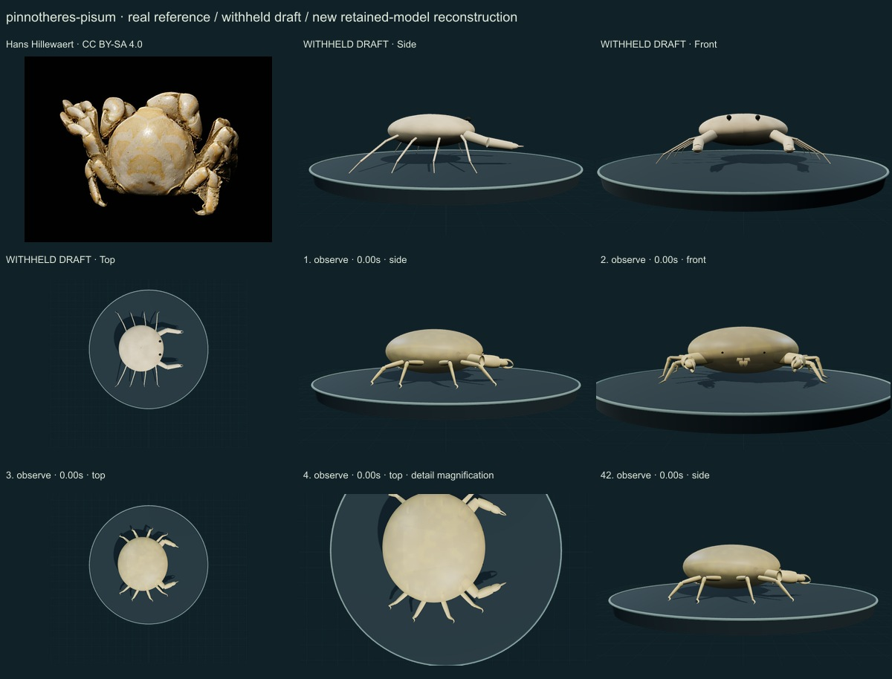
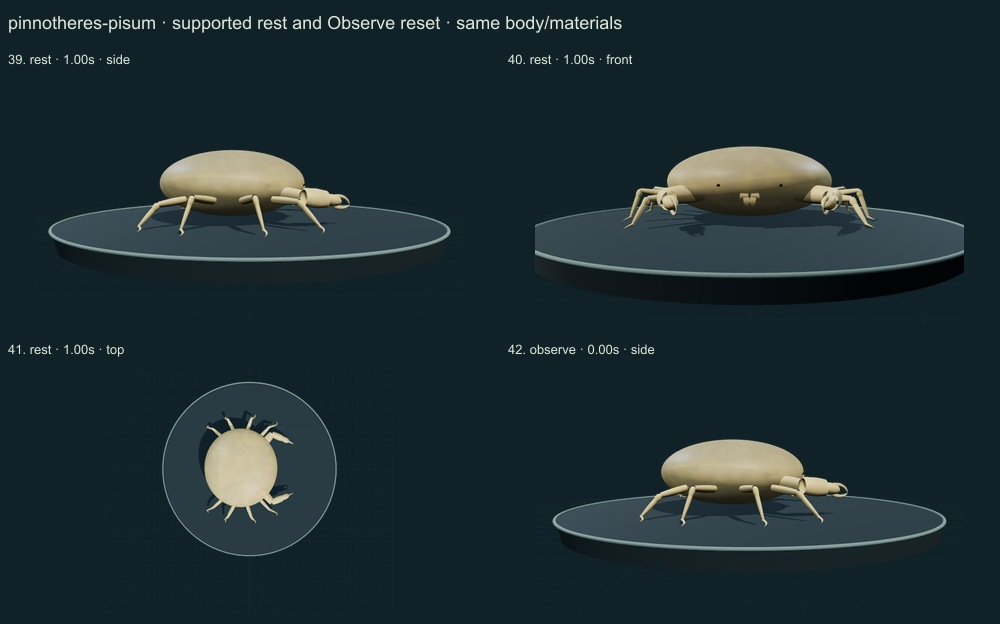
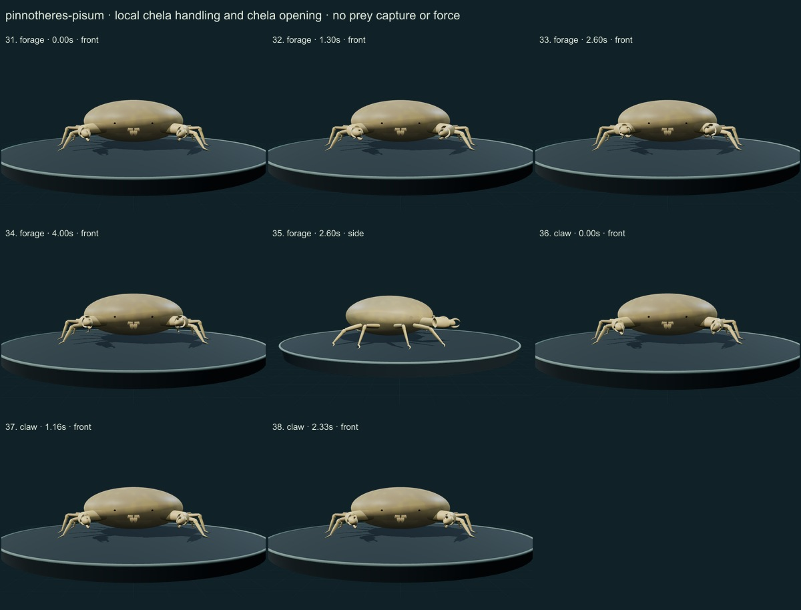
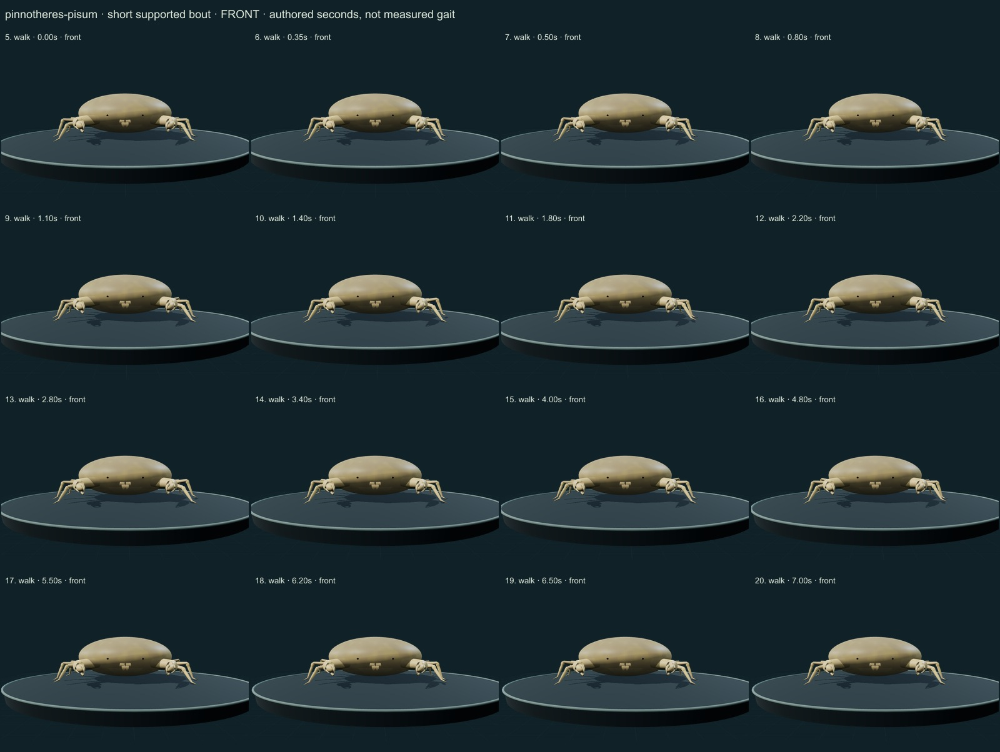
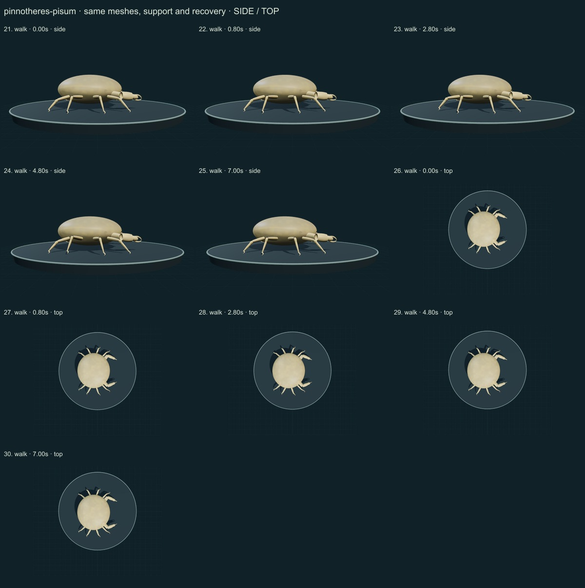

PhenoVoxel Archive · v0.6.19 · October 24, 2026
Pea crab · individual initial correction
This five-species release reaches 262 after verified publication. 38 saved drafts remain withheld; 288 species remain to 550, including 250 without saved drafts. Release register. Fine anatomy and biological dynamics remain partial, unmeasured and independently unvalidated.
Naturalis morphology was directly read, Atkins1958 publisher abstract/preview was scoped separately, and Manning1993 actual printed126 Figure1b/text was rendered/read for P.pisum comparative mouthparts. The longer spatulate propodus and shorter basal styliform dactylus are distinguished from related pea-crab genera. The Hans Hillewaert Southern North Sea photograph was viewed. No male swimming assigned to the selected soft-female study.
Hans Hillewaert · CC BY-SA 4.0. Hans Hillewaert labels a Southern North Sea pea crab. Preparation, sex and live material properties are not independently documented in the caption. A soft adult female form uses separate anatomical evidence; the selected photograph cannot calibrate living translucency or internal organs. Resized inside 1000 px, flattened and JPEG encoded; no generative alteration.
Exact source/license/download/local checksums remain in the data. Photograph identity and capture conditions are not independently re-established. Generated photographs are not used.
A selected soft adult female study now has a continuously rounded inflated envelope, inconspicuous small eyes, short eight-legged articulation, strongly curved short dactyli, equal small chelae and a broad female ventral cover. Small separate third-maxilliped propodus/dactylus cues replace bead-like mouthparts.
Smooth cream/yellow regional variation and an authored semitransparent material replace the hard-edged oval. The selected photograph's preparation and live optical state are not established.
Remaining: Soft-body deformation, setal filtering structures, gonopores, gills, host fit and complete third-maxilliped anatomy are incomplete. The selected model is unmeasured and still simplified. Translucency is an illustration, without calibrated scattering, visible organs or a physiological claim. The source photo does not independently determine sex or preparation.
Small supported limb study, local chela articulation/opening, quiet support and reset. Controls explicitly label a limb and chela study; no natural host feeding, swimming or ingested flow is simulated.
No measured coordinates, natural playback rate, joint limits, forces, fluid dynamics, muscle, food contact, ingestion, sensory physiology or independent biological validation. Fixed-length/support checks establish internal software consistency only.
42 actual final nonblank side/front/top, enlarged and action/posture states inspected individually on labelled sheets against the authentic photograph and scoped sources. Superseded frames excluded. Qualitative author assessment, not independent expert certification.





No 90% accuracy score, measured biological rate, physiological simulation or independent specialist certification is asserted. Software checks are not empirical validation. The prior 257 species objects and credited wolf/tiger behavior meshes are unchanged. Original geometry/material/controller code is MIT; real reference photos retain their individual licenses. Primary-paper figures were consulted where accessible and linked, not redistributed. Modern taxonomy is retained; Protista/Monera are legacy reporting conveniences and recorded occurrences are not native-range boundaries.
Per-frame findings, source scopes and checksums · Live model